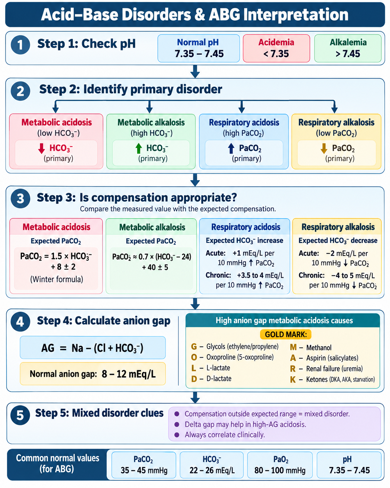
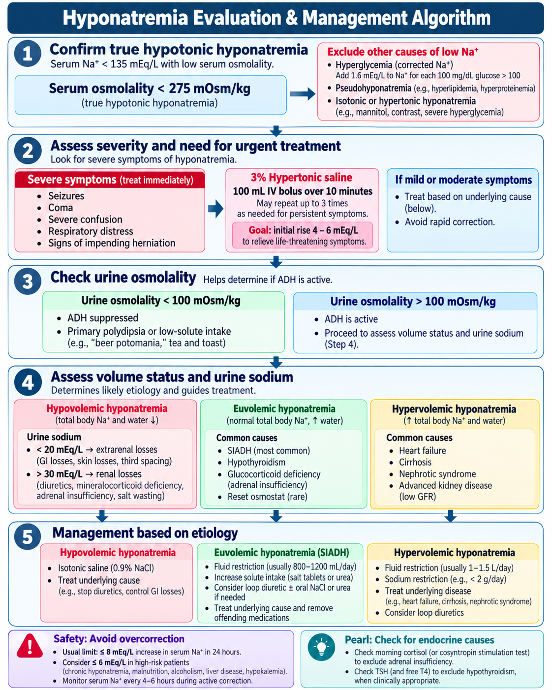
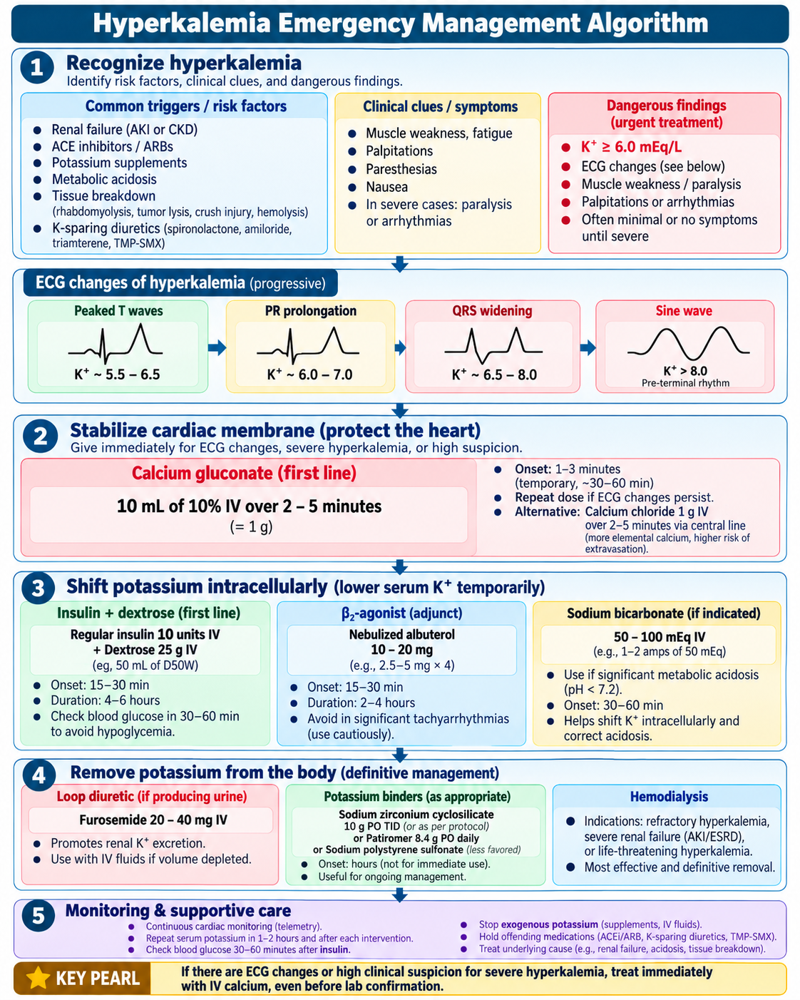

🧪 Electrolyte Disorders & Acid–Base Interpretation
Physician-level approach to ABGs, sodium and potassium emergencies, mixed acid–base disorders and high-yield mineral abnormalities.
80 questions
1. ABG Interpretation & Compensation
Use a fixed sequence: pH → primary process → expected compensation → anion gap → mixed disorder check.
Normal anchors
Primary patterns
| Disorder | Primary change | Compensation |
|---|---|---|
| Metabolic acidosis | ↓ HCO₃⁻ | ↓ PaCO₂ |
| Metabolic alkalosis | ↑ HCO₃⁻ | ↑ PaCO₂ |
| Respiratory acidosis | ↑ PaCO₂ | ↑ HCO₃⁻ |
| Respiratory alkalosis | ↓ PaCO₂ | ↓ HCO₃⁻ |
Winter formula
For metabolic acidosis: Expected PaCO₂ = 1.5 × HCO₃⁻ + 8 ± 2. Measured PaCO₂ above expected = additional respiratory acidosis; below expected = additional respiratory alkalosis.
Respiratory compensation rules
- Respiratory acidosis: HCO₃⁻ rises ≈1 mEq/L per 10 mmHg acute PaCO₂ rise; ≈3.5–4 chronic.
- Respiratory alkalosis: HCO₃⁻ falls ≈2 mEq/L per 10 mmHg acute PaCO₂ fall; ≈4–5 chronic.
Metabolic alkalosis compensation
Expected PaCO₂ ≈ 0.7 × (HCO₃⁻ − 24) + 40 ± 2–5.
Red flag
Physiologic compensation does not “overshoot.” A value outside the expected range means a second primary acid–base disorder.
Memory line
ROME: Respiratory Opposite, Metabolic Equal — pH and PaCO₂ move opposite in primary respiratory disease; pH and HCO₃⁻ move together in primary metabolic disease.
🧭 Acid–Base Disorders & ABG Interpretation
Approved Day 7 visual
2. Metabolic Acidosis: Anion Gap & Delta Gap
Classify high-gap versus normal-gap disease, then look for a mixed metabolic process.
Anion gap
AG = Na − (Cl + HCO₃). A commonly used normal range is about 8–12 mEq/L without potassium; interpret with the local laboratory range.
High anion gap — GOLD MARK
- Glycols
- Oxoproline
- L-lactate
- D-lactate
- Methanol
- Aspirin
- Renal failure/uremia
- Ketoacidosis
Dangerous presentations
Shock/lactic acidosis, DKA, toxic alcohol ingestion, salicylate poisoning and severe renal failure require rapid cause-directed management.
Normal-gap metabolic acidosis
Think bicarbonate loss or impaired renal acid excretion: diarrhea, renal tubular acidosis, pancreatic/intestinal losses, early renal failure, chloride-rich fluid load.
Delta ratio
Δ ratio = (AG − normal AG) / (24 − HCO₃⁻). Roughly: <0.4 suggests pure NAGMA; 0.4–0.8 mixed HAGMA/NAGMA; ~0.8–2 predominantly HAGMA; >2 suggests concurrent metabolic alkalosis or chronic respiratory acidosis. Use as a clue, not a stand-alone diagnosis.
Albumin matters
Low albumin lowers the expected anion gap. In hypoalbuminemia, an apparently “normal” AG can conceal a clinically important gap acidosis.
Urine anion gap pearl
In NAGMA, a negative urine anion gap suggests appropriate ammonium excretion and favors GI bicarbonate loss; a positive gap can support impaired renal acid excretion/RTA.
3. Metabolic Alkalosis & Respiratory Disorders
Use urine chloride for metabolic alkalosis and acute-vs-chronic compensation for respiratory disorders.
Metabolic alkalosis — common causes
Vomiting/NG suction, loop or thiazide diuretics, volume contraction, mineralocorticoid excess, severe hypokalemia and alkali administration.
Urine chloride approach
- <10–20 mEq/L: chloride-responsive — vomiting, remote diuretic use, post-hypercapnia.
- ≥20 mEq/L: consider active diuretics, mineralocorticoid excess, Bartter/Gitelman or severe potassium depletion.
Treatment concept
Correct the cause, chloride/volume depletion and potassium deficiency. Persistent saline-resistant alkalosis requires treatment of the underlying mineralocorticoid or renal process.
Respiratory acidosis
Hypoventilation: COPD/asthma fatigue, CNS depression, neuromuscular weakness, obesity hypoventilation, airway or chest-wall disease. Acute hypercapnia causes only modest bicarbonate rise; chronic hypercapnia produces greater renal compensation.
Respiratory alkalosis
Hyperventilation: hypoxemia/PE, sepsis, pain/anxiety, pregnancy, liver disease, CNS disease, salicylates and excessive mechanical ventilation.
High-yield trap
Salicylate toxicity commonly produces a mixed respiratory alkalosis + high-anion-gap metabolic acidosis. A near-normal pH does not mean a normal acid–base state.
Memory line
Normal pH + clearly abnormal PaCO₂/HCO₃⁻ = suspect a mixed disorder.
4. Hyponatremia: Diagnosis & Safe Correction
Confirm hypotonic hyponatremia, assess symptoms, then use urine osmolality and urine sodium to localize the cause.
First question: is it hypotonic?
Serum Na <135 mEq/L is hyponatremia. Check measured serum osmolality. True hypotonic hyponatremia is generally associated with serum osmolality <275 mOsm/kg. Consider hyperglycemia and pseudohyponatremia when tonicity does not fit.
Severe neurologic symptoms = emergency
Seizure, coma, profound confusion or signs of cerebral edema warrant prompt 3% hypertonic saline bolus therapy with close sodium and neurologic monitoring. Contemporary guidance commonly uses repeated 100–150 mL boluses depending on protocol.
Urine osmolality
- <100 mOsm/kg: ADH suppressed → primary polydipsia or low-solute intake.
- >100: ADH active → proceed to volume status and urine sodium.
Volume patterns
- Hypovolemic: GI loss, diuretics, adrenal/mineralocorticoid deficiency.
- Euvolemic: SIADH, glucocorticoid deficiency, hypothyroidism, drugs.
- Hypervolemic: HF, cirrhosis, nephrotic syndrome, advanced kidney disease.
Overcorrection prevention
Avoid rapid correction, especially in chronic hyponatremia and high-risk patients (alcohol use disorder, malnutrition, advanced liver disease, hypokalemia or very low sodium). A conservative general ceiling is ≤8 mEq/L in 24 h; many experts use ≤6 mEq/L/24 h in very high-risk patients.
SIADH pattern
Hypotonic euvolemic hyponatremia with inappropriately concentrated urine and usually urine Na >30 mEq/L after excluding adrenal insufficiency, significant hypothyroidism, renal failure and diuretic effects.
Trap
Do not normalize sodium rapidly just because the initial value is very low. The immediate goal in symptomatic disease is a small controlled rise sufficient to reverse life-threatening cerebral edema.
🧭 Hyponatremia Evaluation & Management
Approved Day 7 visual
5. Hypernatremia & Water Deficit
Hypernatremia is usually a water problem: identify access to water, urine concentration and ongoing losses.
Core concept
Serum Na >145 mEq/L usually reflects water loss exceeding sodium loss or, less commonly, sodium gain. Neurologic symptoms are more likely with severe or rapidly developing hypernatremia.
Water deficit estimate
TBW × [(serum Na / 140) − 1]. Approximate TBW fractions vary with age, sex and body composition; use the estimate as a starting point and recheck sodium frequently.
Urine osmolality clues
- Very dilute urine despite hypernatremia → consider diabetes insipidus.
- Concentrated urine → kidneys are responding; look for extrarenal water loss or inadequate intake.
- Osmotic diuresis can produce high urine volume with intermediate/high osmolality.
Fluid choice
If hemodynamically unstable, restore perfusion first with isotonic crystalloid. Once stable, replace free water orally/enterally when possible or with hypotonic IV fluid such as D5W or 0.45% saline depending on volume status and ongoing losses.
Correction rate
For chronic or unknown-duration hypernatremia, traditional practice targets a gradual fall around ≤0.5 mEq/L/h and generally ≤10–12 mEq/L/day. Emerging adult data question whether faster correction is harmful, but careful monitoring remains essential.
Central vs nephrogenic DI
Central DI responds to desmopressin; nephrogenic DI does not. Causes of nephrogenic DI include lithium, hypercalcemia, hypokalemia and kidney disease.
Monitoring
Reassess sodium, urine output, glucose and ongoing losses frequently during active correction; adjust the prescription rather than relying on one calculated deficit.
6. Hyperkalemia Emergency Management
Protect the myocardium, shift potassium intracellularly, then remove potassium from the body.
When it is dangerous
Urgency increases with ECG changes, rapidly rising potassium, severe elevation, weakness/paralysis, kidney failure or ongoing tissue breakdown. Severe hyperkalemia is commonly defined as K ≥6.5 mmol/L in kidney guidelines, but ECG toxicity can occur at lower values.
ECG progression
Peaked T waves → PR prolongation/flattened P waves → QRS widening → sine-wave pattern → ventricular fibrillation/asystole. ECG sensitivity is imperfect; a normal ECG does not guarantee safety.
1. Stabilize the heart
IV calcium for hyperkalemia with toxic ECG changes or peri-arrest concern. Calcium does not lower potassium; it antagonizes membrane toxicity.
2. Shift K intracellularly
- IV regular insulin + glucose is a core therapy.
- Nebulized β₂-agonist is an adjunct.
- Sodium bicarbonate is most useful when significant metabolic acidosis is present; it is not a reliable sole treatment.
3. Remove potassium
Stop potassium sources/offending drugs, use diuresis when appropriate, consider modern potassium binders for selected patients, and use dialysis for refractory severe hyperkalemia or severe renal failure.
Glucose monitoring
Insulin treatment can cause delayed hypoglycemia. Monitor capillary glucose repeatedly for several hours after insulin–glucose therapy.
Pseudohyperkalemia
Hemolysis, marked thrombocytosis or leukocytosis can falsely elevate potassium. Repeat a carefully collected sample when the clinical picture is discordant—but never delay treatment when ECG toxicity is present.
🧭 Hyperkalemia Emergency Management
Approved Day 7 visual
7. Hypokalemia & Magnesium
Find the source of potassium loss, assess ECG risk and correct magnesium when potassium will not stay corrected.
Severity
Hypokalemia = K <3.5 mEq/L. Severe disease is typically K <2.5 mEq/L or any level associated with significant weakness, paralysis, arrhythmia or ECG changes.
Common causes
GI loss, loop/thiazide diuretics, mineralocorticoid excess, renal tubular disorders, insulin/β₂-agonist shifts, alkalosis and poor intake. Hypomagnesemia often coexists.
ECG clues
Flattened T waves, ST depression, prominent U waves, apparent QT/QU prolongation, atrial or ventricular ectopy and ventricular arrhythmias.
Urine potassium
Low urine K suggests appropriate renal conservation and favors extrarenal loss. Elevated urine K suggests renal wasting; interpret with acid–base status, blood pressure and diuretic exposure.
Replacement
Oral KCl is preferred when the patient is stable and can use the GI tract. IV KCl is reserved for severe/symptomatic hypokalemia, major ECG abnormalities, or inability to take oral therapy. Continuous ECG monitoring is used for faster central-line replacement.
Magnesium pearl
Hypomagnesemia promotes renal potassium wasting and makes hypokalemia refractory. Replace magnesium when low or strongly suspected.
Safety
Never give IV potassium as a rapid IV push. Recheck potassium frequently during aggressive replacement, especially in kidney dysfunction.
📊 Hypokalemia Evaluation & Treatment Guide
Approved Day 7 visual
8. Calcium, Magnesium & Phosphate Emergencies
Recognize neuromuscular and cardiac manifestations and know which abnormalities need urgent IV therapy.
Hypocalcemia
Paresthesias, cramps, tetany, seizures and QT prolongation. Check ionized calcium when critical illness, albumin abnormalities or acid–base disturbance may make total calcium misleading.
Severe symptomatic hypocalcemia
IV calcium is indicated for tetany, seizures, significant QT-related arrhythmia or severe symptomatic hypocalcemia. Correct associated hypomagnesemia.
Hypercalcemia
Polyuria, dehydration, constipation, weakness, confusion and shortened QT. Severe symptomatic hypercalcemia requires isotonic fluids when volume depleted plus cause-directed therapy; antiresorptive agents are used for many malignancy-related cases.
Hypomagnesemia
Tremor, tetany, seizures, QT prolongation and ventricular arrhythmias including torsades. It can cause refractory hypokalemia and hypocalcemia. IV magnesium is used for severe/symptomatic deficiency and torsades.
Hypermagnesemia
Hyporeflexia, weakness, hypotension, bradycardia, AV block and respiratory depression. Stop magnesium; give IV calcium for significant toxicity and consider dialysis in severe renal failure.
Phosphate
Severe hypophosphatemia can cause respiratory muscle weakness, rhabdomyolysis, hemolysis and impaired myocardial function. Hyperphosphatemia is common in kidney failure and tumor lysis and can drive hypocalcemia.
High-yield connection
Refeeding syndrome classically causes hypophosphatemia with potassium and magnesium shifts. Identify high-risk patients and monitor electrolytes closely during nutrition initiation.
🔥 Day 7 Rapid Review
Numbers and pattern-recognition facts worth memorizing.
📈 Day 7 Progress
Your original-practice scores and external QBank block tracker are stored privately in this browser.